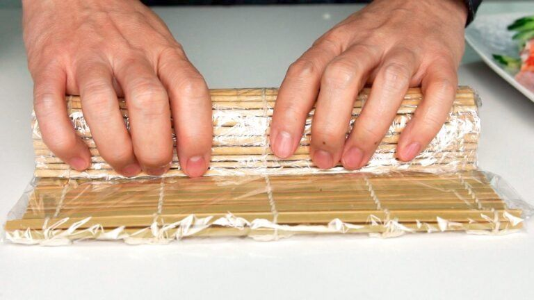

California Roll Sushi
Recipe from
norecipes.com
- Prep: 20 mins
- Total: 20 mins
- Yield: 6 rolls
Description
California Rolls are a type of maki sushi (巻き寿司 – rolled sushi) made
by rolling ingredients such as crab and avocado in nori and seasoned rice.
Although rolled sushi originates in Japan, California Rolls are not from
Japan.
Ingredients
-
1 batch
prepared sushi rice
- 1 avocado (sliced into 16 wedges)
- 200 grams crab meat (or immitation crab)
- 1 smallcucumber (julienned)
- 3 sheet sunseasoned nori
- 1 tablespoon toasted sesame seeds
Steps
-
Prepare a
batch of sushi rice.
- Because a California Roll gets rolled inside out, you need to cover your makisu (bamboo mat) with plastic wrap to keep the rice from sticking to the mat. You’ll also want to prepare a small bowl of water to dip your fingers in to keep the rice from sticking to them.
- Carefully fold your nori in half, if the nori is fresh, it should split in half along the fold to give you two 3.75 inch x 8 inch pieces. If your nori is stale and refusing to split, you can toast it by gently waving it over an open flame, or simply use a pair of scissors.
- Lay one sheet of nori towards the bottom of the mat. Lightly wet your fingers in the bowl of water and top with a small amount of rice.
- Making sure your fingers are moist to prevent the rice from sticking, use your fingertips to gently spread the rice out to the edges of the nori in a thin even layer. Don’t use too much pressure, or you’ll end up with mushy rice.
- Sprinkle the rice with sesame seeds, then flip the rice and nori over so that the rice is on the bottom and the nori is facing up.
- Along the bottom edge of the nori, put a few strips of cucumber down, followed by a few strips of avocado. Finish, by spreading some crabmeat across the roll. Be careful not to add too much filling or your roll won’t seal properly.
- To roll, tuck your thumbs under the bamboo mat and use them to lift the mat and rice over the filling, while using the rest of your fingers to hold the filling in place.
- Use the mat to continue rolling the rice over the filling until the rice hits the nori.
- At this point you’ll probably need to start pealing the mat back away as you continue to roll, otherwise you’ll end up rolling the mat into the rice.
- Once, the rice has been completely rolled into a cylinder. Give the matt a firm hug with your fingers to compress the rice a little so it doesn’t fall apart when you cut it.

- If you’re not going to eat the roll right away, wrap it in plastic wrap until you are ready to eat your California Roll. Putting the rolls in the refrigerator will make the rice hard and is not recommended, but if it’s going to be more than an hour before you’re going to eat the roll, you should put it in the fridge to keep the crab from spoiling.
- To slice the rolls, use a long sharp knife, and place the back edge of the blade at the very center of the roll. Pull the knife towards you, letting the weight of the knife cut through the roll. If put pressure on the knife, it will squish the roll and the filling will come out. Repeat cutting each half into thirds to make 6 pieces of sushi.
- Serve your California roll with soy sauce and wasabi.
Nutrition Facts
Per Serving: 232 calories; protein 3.9g; carbohydrates 23.7g; fat 14.4g; cholesterol 4.7mg; sodium 135mg.
Return to homepage